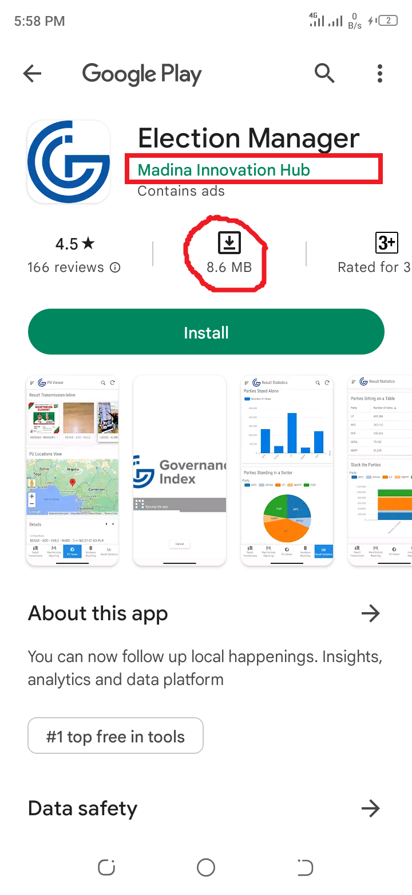
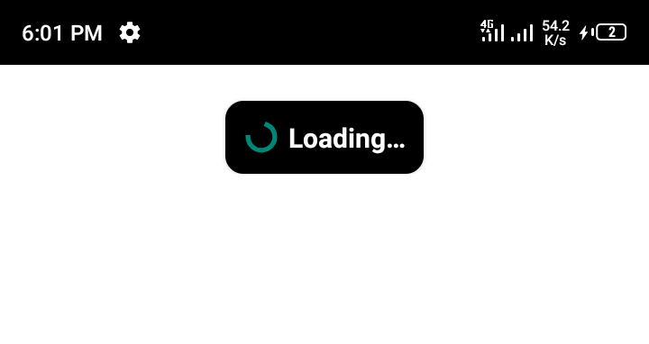
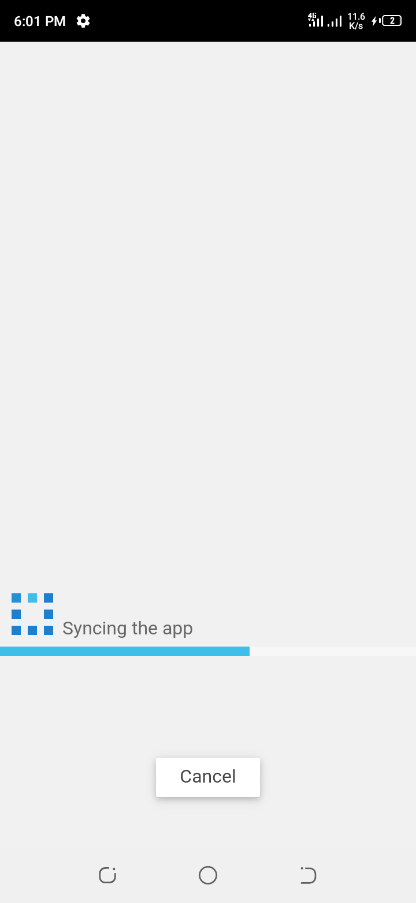
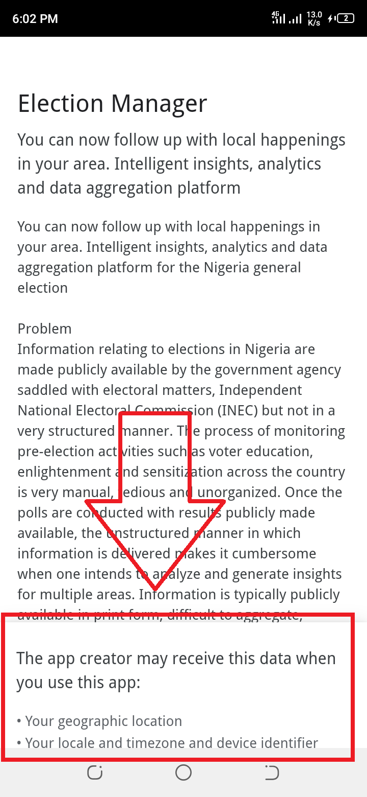
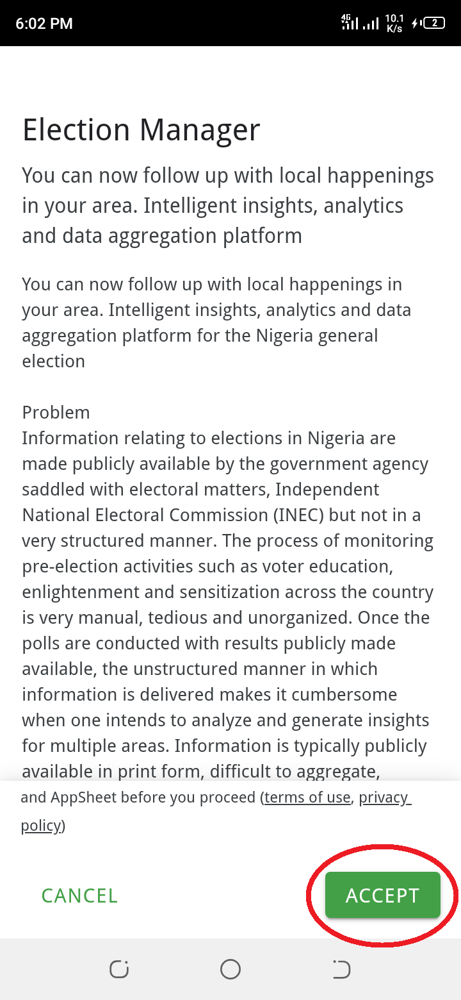
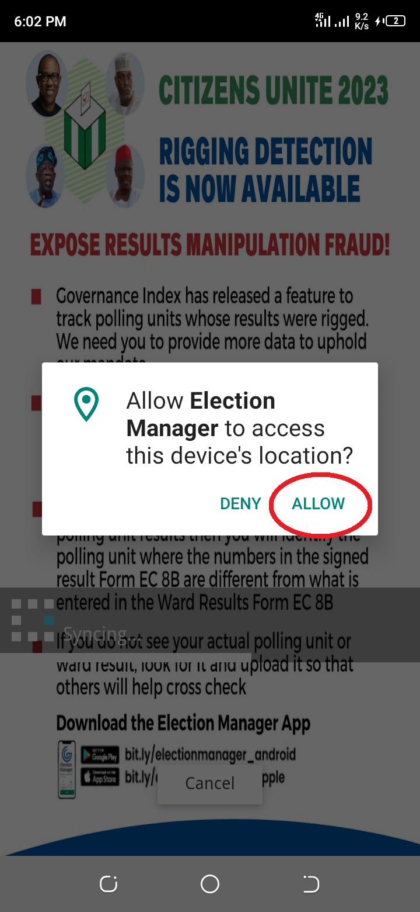
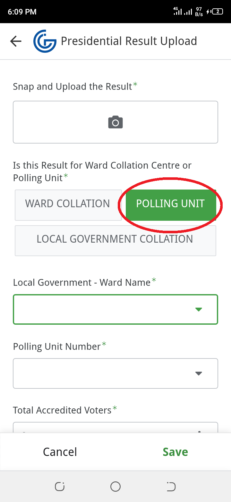
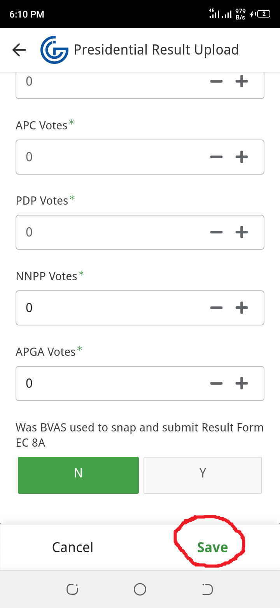

Election Manager
You can download the app by typing the following in a browser and it should take you to the google play store
bit.ly.electionmanager_android
bit.ly.electionmanager_android
or go directly to google play store on your phone search for election manager and make sure it is the one by "Madison Innovation Hub". It is 8.6mb in size.

download the 8.6mb android app and install.
make sure data is on during the installation process, as it will load and sync after install.

After loading, synchronize screen will also load.

there is a small box at the bottom. Scroll the box to the end and click accept.


Give it necessary permissions if asked.

click "Presidential Result Upload" at the bottom of the app.
First Click on the photo icon, to select the photo
Next, tap "polling unit". By default polling unit is selected (in green)

then fill in the details of your polling unit,
and click save at the bottom.

To quickly select ward from the long list, Click on the search box on top and type the "Registration Area" name, E.g Abodi/Patesi. You can find your Registration area from the list of voters in your pulling unit if it is still there. Or search for your LGA and then look for your ward. then look for your polling unit number.
your pulling unit number is the last text you will find when you go to inec IRev website: www.inecelectionresults.ng